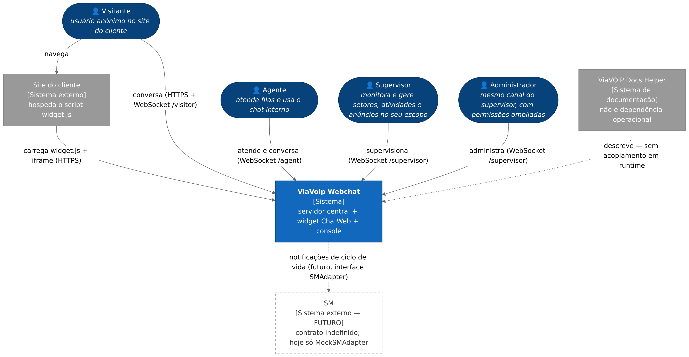
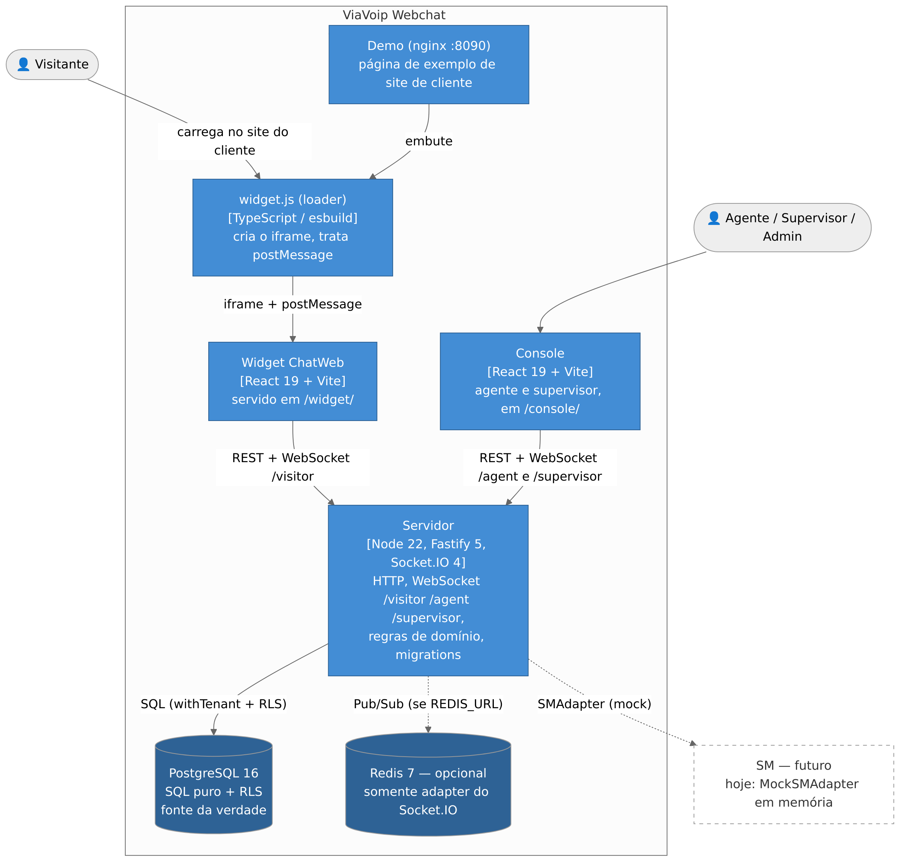
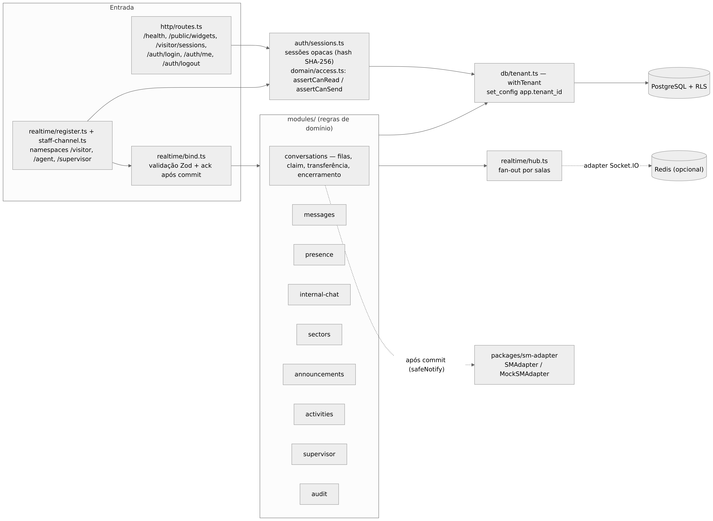
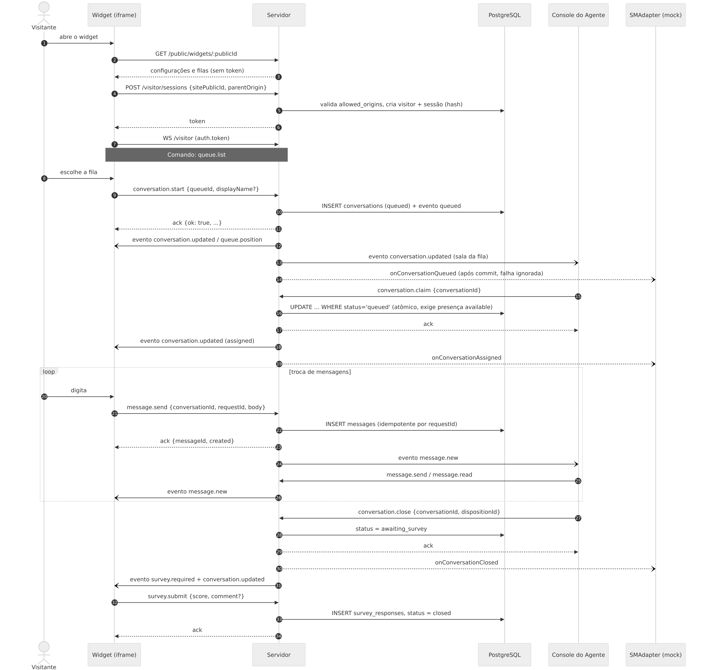
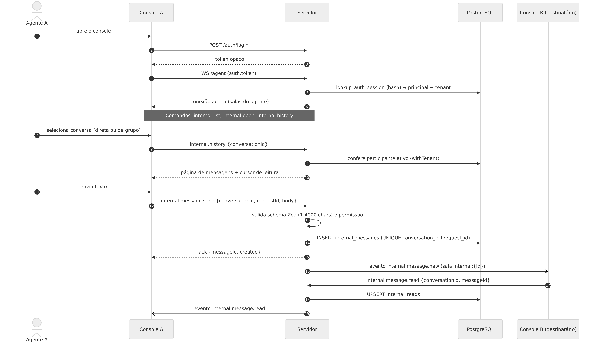
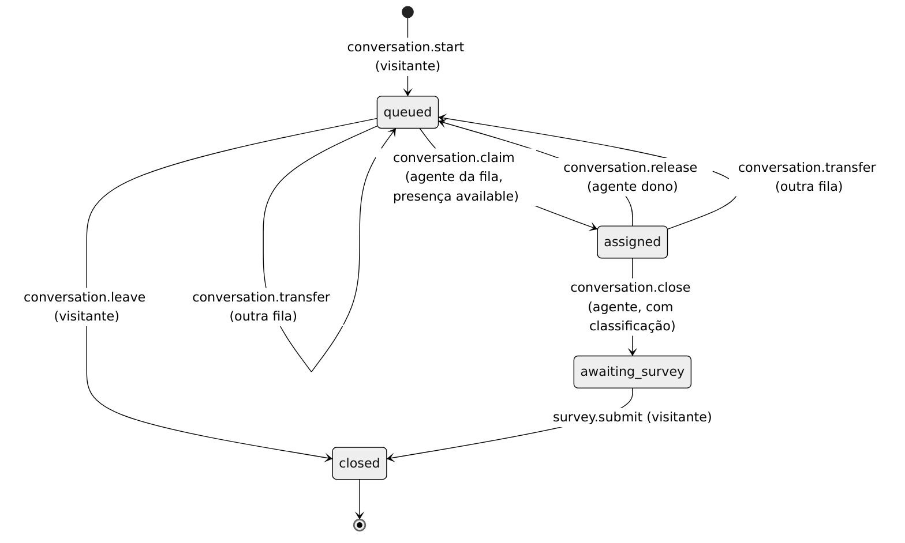
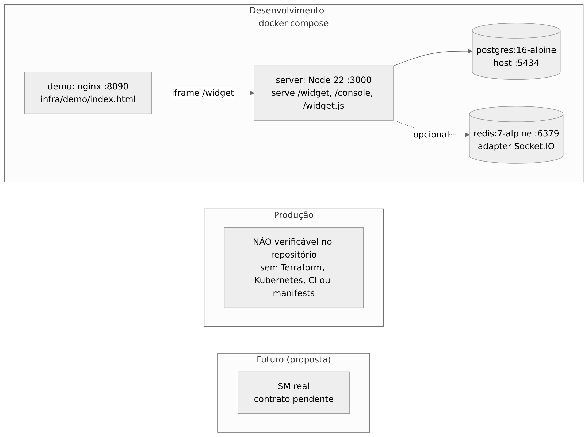

Diagramas
Fontes editáveis em Mermaid (*.mmd); imagens em rendered/ (SVG e PNG), geradas por scripts/docs/render-diagrams.sh. Os ERDs são gerados por scripts/docs/gen-database.mjs: não os edite à mão.
| # | Diagrama | Fonte | Imagem |
|---|---|---|---|
| 1 | Contexto do sistema (C4 nível 1) | context.mmd |
 |
| 2 | Containers (C4 nível 2) | containers.mmd |
 |
| 3 | Componentes do backend | backend-components.mmd |
 |
| 4 | Sequência do atendimento externo | external-chat-sequence.mmd |
 |
| 5 | Sequência do chat interno | internal-chat-sequence.mmd |
 |
| 6 | DER geral e por domínio | database-erd*.mmd |
|
| 7 | Estados: atendimento, presença, atividade | attendance-states.mmd, presence-states.mmd, activity-states.mmd |
 |
| 8 | Infraestrutura | infrastructure.mmd |
 |
Fonte do DER: schema real extraído das migrations 001–011 (ver database/overview.md). O DER geral é largo por ter 40 tabelas; use os cinco por domínio para leitura.